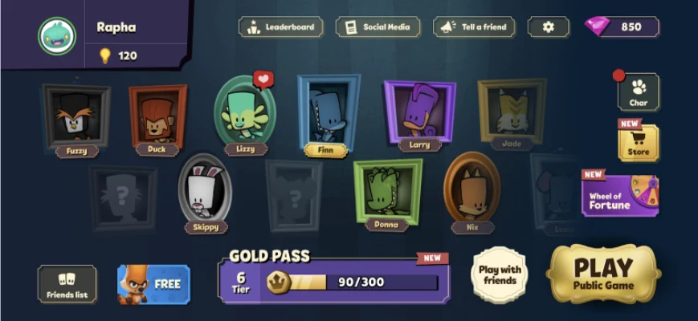
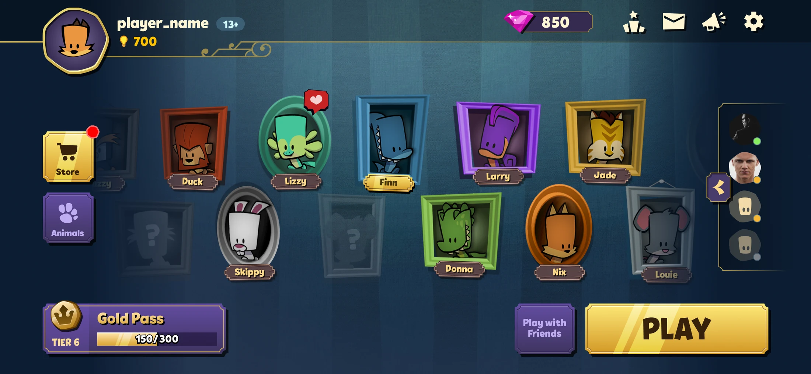
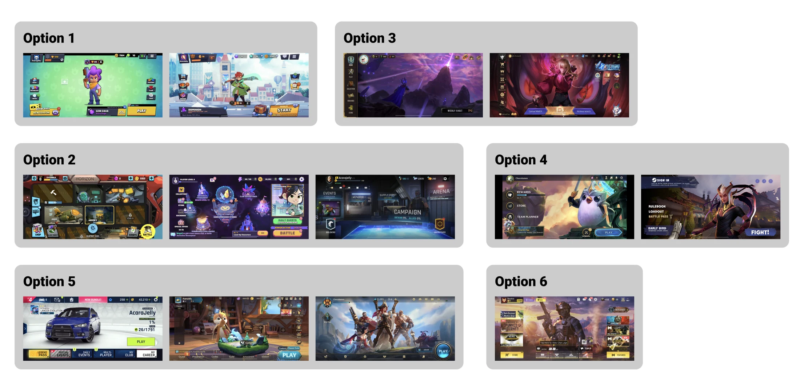
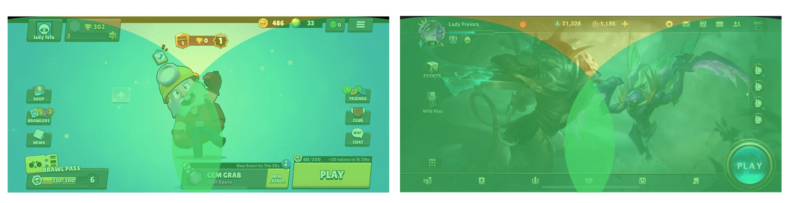
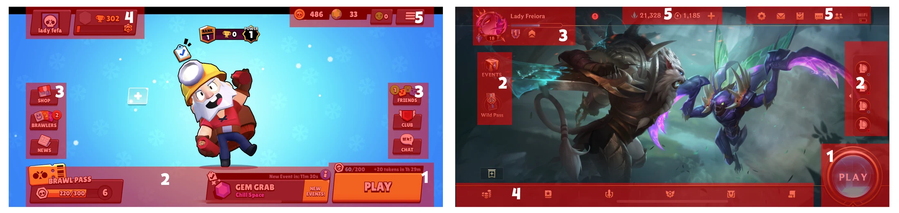
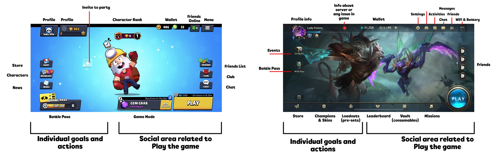
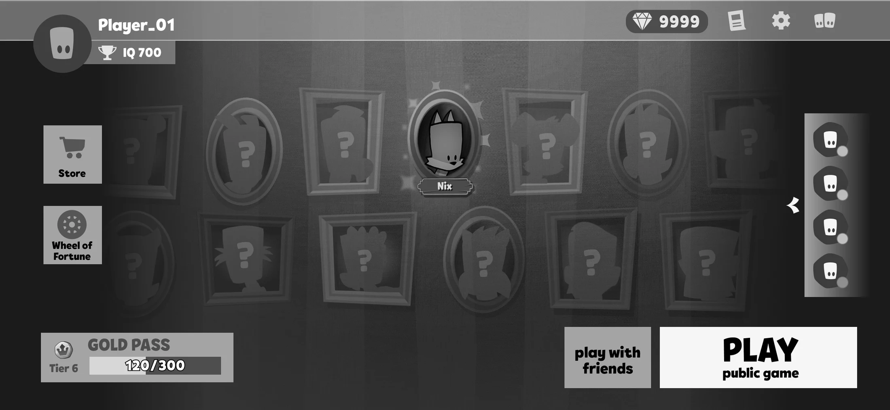
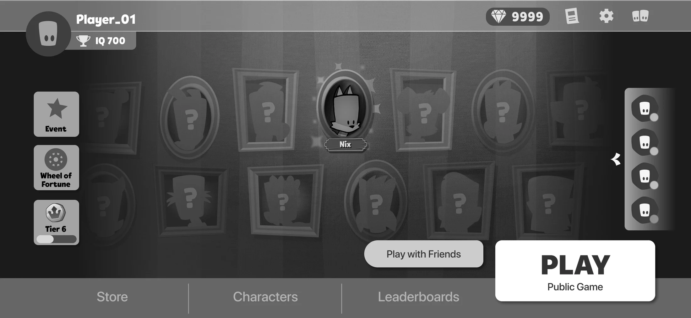
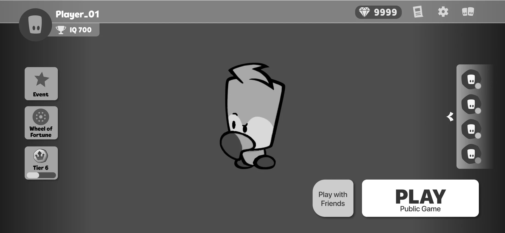

Main Menu Revamp
Suspects was a game made by a very small team. Many of its design decisions were made on the go and the Main Menu screen had to accommodate all the new features and options that were being added to the game during the development.
Final Result
Before:

After:

The revamp was well received by our players with positive evidence from streamers and metrics.
- Players’ impression → You tubers and streamers reacted to the new menu positively with comments like “Now this game feels very premium” and “I like to see that I have friends online without having to click on a button”;
- Metrics and performance → I can't disclose the full metrics but we had an increase in retention, more clicks on Store and Friends, and our Players were more eager to play with Friends;
The process
Overview
After the Global Launch, we dedicated time to reevaluate the Main Menu, since it's one of the most important screens of the game – the hub where the Player accesses all the core features.
The problem statement:
“The Main Menu is cluttered and busy, lacking hierarchy and contrast.”
Process Summary
- Understanding the problem
- Ran workshop with Stakeholders to get their pain points, concerns and constraints about the current state of the Main Menu;
- Collected data evidence from how our Players use and interact with the current Main Menu → We decided to go with quantitative data from most clicks, retention, etc;
- Defined metrics that would help compare before and after the revamp;
- Benchmark
- Selected and organized multiplayer games with a focus on social features;
- Studied in depth two examples that were closer to Suspect's product vision → we considered thumb zone, hierarchy, and functionality;
- Wireframe
- Create low-fidelity wireframes with layout options to discuss with the team;
- Test the options with players → Unfortunately we couldn't do this step due to time constraints. Not ideal but with the time I had, I was able to collect some feedback from other UXers and Researchers from the UX department;
- Visual Design (final) → done by Claudio Watabe
- Release
- Players’ impression → You tubers and streamers reacted to the new menu positively with comments like “Now this game feels very premium” and “I like to see that I have friends online without having to click on a button”;
- Metrics and performance → I can't disclose the full metrics but we had an increase in retention, more clicks on Store and Friends, and our Players were more eager to play with Friends;
- Next Steps
- Get feedback from players in deep listening sessions to collect precise data on what can be further improved in the game;
- Reflect on the revamp to other screens (when possible) and study what other elements can also receive a better visual treatment;
- Keep following the metrics to understand what other areas of the menu are causing friction for our Players;
After a lot of thought and effort from the whole team, the new Main Menu looked like this:
A lot of space and a unified visual identity.
In-game preview:
Characters are indeed distracting but the hierarchy is more clear.
Detailed Process
Understanding the problem
Through a workshop with the game's stakeholders (Game Director, Game Designer, UI Engineer, Visual Designer, and Project Manager) we discussed and gathered information on what were the main problems with the screen and what constraints we would have.
Main concerns:
- No First Time User Experience (FTUE) – The Main Menu is the same for all players, doesn't matter the stage they're in the game they always see everything that is available;
- No hierarchy – everything feels important at the same time;
- Hard to read all the information – lack of contrast and font sizing;
- Visual inconsistency – too many styles and sizes;
- Lack of affordance – no cue of what is clickable and the expected outcome;
- Display of options that are rarely clicked by the Players (telemetry data);
- No more space on the screen to add future events or offers;
Constraints:
- The character collection should be kept in the background due to the complexity of changing it from both engineering and design perspectives;
- We can't solve FTUE before the UX/UI revamp – the noise the menu causes now could affect the process of calibrating the FTUE;
Based on that, we observed two main areas that needed attention:
- Revamp visual design and improve usability (UX/UI) ← priority
- Design and implement FTUE based on player journey ← TBD after the visual revamp
The design objectives for the Visual and UX revamp were:
- Improve the usage of space on the screen, making better use of negative space;
- Create a clear hierarchy between buttons and elements;
- Group elements by function and importance;
- Hide less important options and features;
- Have dedicated space for future Live Ops events;
To measure the success of the revamp, we followed and compared metrics such as retention, store clicks, time to start match, and time spent on the menu.
Benchmark
When selecting the games, the references followed the criteria:
“Landscape mobile multiplayer games with focus on social features.”
The options were categorized by similar layout, considering the Play button position and how they organize menu options (left, left and right, center).

After that, I selected two games that were more aligned with the Suspect's product vision (cartoonish fantasy theme, heavily social, monetization on Battle Passes and cosmetics) and went deep into analyzing their menu structure. The games were Brawl Stars and Wild Rift.
Thumb zone
Mapping what elements and areas of the screen are out of the reach of thumbs.

Hierarchy
Understand and define the order of importance of each element/area, considering its size and contrast among other elements and background.

Functionality
Mapping what each button does, how they're grouped, and what kind of information is displayed on screen.
From this study, I concluded that both games divide and organize their screen in two parts:
- Individual → Everything that tracks the Player's progress or depends only on the Player herself to be accomplished (player level, character level, character collection, battle pass, rewards) and single actions (store)
- Social → Everything related to playing the game or managing social features (play matches, friends, gameplay events, club or clan, chat)

Wireframe
When doing the wireframes, I kept in mind the following aspects:
- Benchmarked examples structure → When organizing the elements on the screen, I followed the logic of having the Player (individual) features on the left and the Social ones on the right.
- Improve our menu interactions based on benchmark → Our Friends's list was a Drawer activated by a button – not very intuitive but better than creating a new screen. In Wild Rift, they also use the drawer format but with more clarity which is an interactive drawer, giving extra information on what friends are online or not on the go.
- Hierarchy and contrast → This aspect should be very clear in the wireframe so the Visual Designer can understand the importance of light in this context.
After sketching some options, I showcased them to the game team and the UX team so they could give their feedback on each version. With that data in hand, I made some adjustments to the designs and highlighted the Strengths and Weaknesses of each version:
Option A

A balanced mix between Brawl Stars and Wild Rift.
Strengths
- Improved button grouping, hiding less relevant options inside menus or reducing to iconography;
- Clearer distinction between the Background (collection) and the Foreground (buttons);
- Space to add Live Ops elements;
Weaknesses
- When a Player has all characters their animation can be distractive;
- We still have some elements competing for attention on screen;
Option B

Option leaning more towards Wild Rift.
Strengths
- Keep most of the options within reach by using the bottom portion of the screen
- Clearer distinction between the Background (collection) and the Foreground (buttons);
- Space to add Live Ops elements;
Weaknesses
- When a Player has all characters their animation can be distractive;
- Because of the buttons at the bottom, we have less negative space thus can feel a little claustrophobic;
Extra: Option C

We did it anyway.
Strengths
- Reduced all extra information into buttons on the left portion of the screen;
- Focus on the Player's favorite character with the possibility to add thematic backgrounds;
- A lot of extra and negative space;
Weaknesses
- The player doesn't have an idea of her character collection;
- It would be hard for engineering to change to this version;
- The design would have to create other screens and flows for character collection and cosmetics management;
Even though option C looked the best design-wise, we decided to start the visual explorations with option A since is the version with fewer Weaknesses, considering engineering constraints back at the time. We understood that the Main Menu would be further iterated to reach the most promising version in the future.